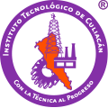

TECNOLÓGICO NACIONAL DE MÉXICO
INSTITUTO TECNOLÓGICO DE CULIACÁN

BIENVENIDO
Sistema de carga y seguimiento de tutorias.
En el cual podras encontrar informacion
sobre tutores,
como alumno, tendras
el derecho de cargar
tus turorias
correspondientes...
Para resolver cualquier inquietud si eres
maestro pide ayuda al Jefe de Docencia y si
eres alumno pide ayuda en La División.